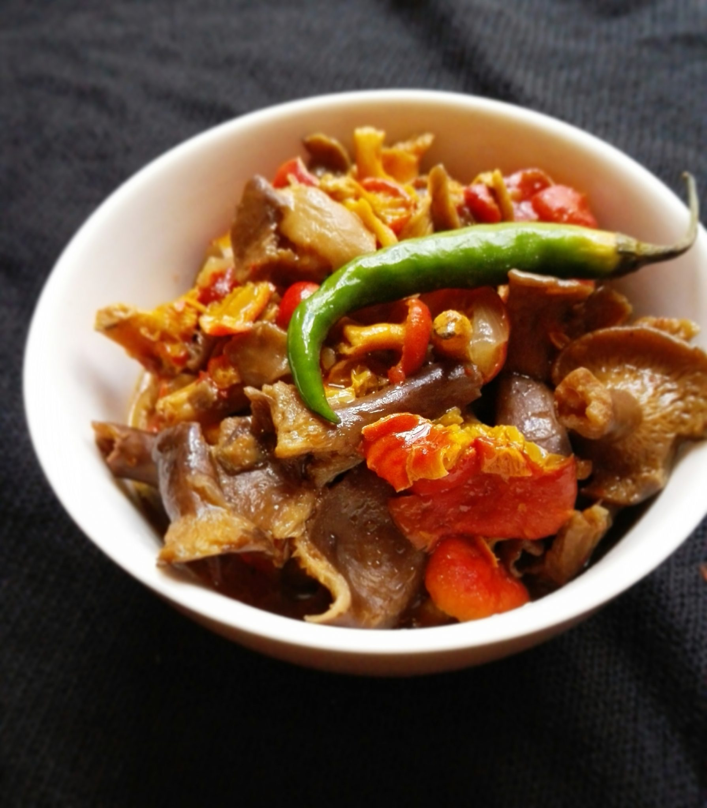

Ubowa

Zambian Food: Red Brown Mushroom Recipe
There are many types of mushrooms common in Zambia during the rainy season.
All the different varieties are very tasty.
Today we are going to cook the red brown mushroom recipe.
These are small in size and red and orange-ish in color.
They have a nice soft texture and a great aroma.
I also mixed them up with other small mushrooms which are brown in color for a more colorful dishand to make them even more tasty and delicious.
This red brown mushroom recipe is a Zambian way of cooking.
Ingredients
- 1 bowl of red and brown mushrooms
- 1 medium tomato
- 1/2 an onion
- 2 tablespoon of cooking oil
- Salt
- Chilli powder (optional)
Steps
- Wash the mushroom thoroughly under running water
- After making sure it is clean, add into a pot with a bit of water, salt and cooking oil
- Boil for at least 20 minutes then add tomatoes, onion and chilli
- Cover and cook for 5 more minutes
- Stir well together and simmer for 2 minutes
- Ready to serve with nshima or rice